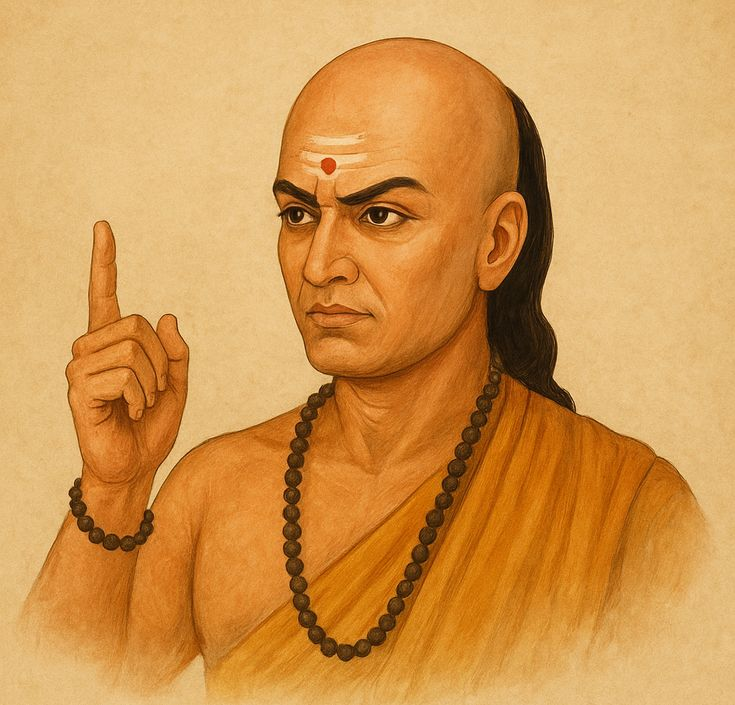
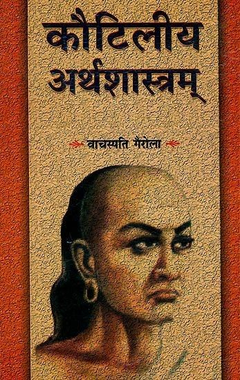

Who Was Chanakya ?
Chanakya, also known as Kautilya and traditionally identified with Vishnugupta, is one of the most famous figures in the history of ancient Indian political thought. He is traditionally associated with the rise of Chandragupta Maurya and the establishment of the Mauryan Empire.
Chanakya is particularly associated with the Arthashastra, a Sanskrit treatise dealing with government, political administration, law, economic activity, diplomacy, military affairs, and relations between states. The text provides an unusually detailed picture of how statecraft was conceptualized in ancient India.
Chanakya is therefore remembered not simply as a political adviser, but as a major figure in the history of Indian political thought and statecraft. However, claims about his life, the precise relationship between Chanakya and Kautilya, and the date and composition of the surviving Arthashastra require historical qualification.
Chanakya : Quick Facts
- Name — Chanakya; traditionally also associated with Kautilya and Vishnugupta
- Historical period — Traditionally associated with the late fourth and early third centuries BCE
- Region — Ancient India
- Known for — Political thought, statecraft, governance, diplomacy, economics, and strategy
- Major text associated with him — Arthashastra
- Political figure associated with him — Chandragupta Maurya
- Tradition — Ancient Indian political and intellectual tradition
- Major subject — The organization and preservation of political power and the functioning of the state
- Historical caution — The authorship, dating, and composition of the surviving Arthashastra are debated by scholars
Chanakya and Ancient India: Historical Context

Chanakya belongs to the historical world of ancient India, a period in which political power was divided among kingdoms and other political communities. The establishment of the Mauryan Empire transformed this political landscape by bringing a large territory under centralized imperial authority.
The traditional story places Chanakya in the political transformation associated with Chandragupta Maurya, the founder of the Mauryan dynasty. According to later traditions, Chanakya helped Chandragupta challenge the Nanda rulers and establish Mauryan power.
Some details of this traditional biography come from later literary sources rather than contemporary records. For this reason, the historical Chanakya should be distinguished from the many legendary stories that developed around his name.
Chanakya and Chandragupta Maurya
One of the most important traditions surrounding Chanakya is his relationship with Chandragupta Maurya. Chandragupta became the founder of the Mauryan dynasty, which eventually developed into one of the largest political powers of ancient India.
Later traditions portray Chanakya as Chandragupta's adviser, strategist, and political mentor. In this account, Chanakya played a major role in helping Chandragupta establish political power and organize the emerging Mauryan state.
The exact historical details of their relationship are difficult to reconstruct. Nevertheless, the association between Chanakya and Chandragupta became one of the most enduring traditions in Indian political history.
What Is the Arthashastra of Kautilya?

The Arthashastra is one of the most important texts in the history of ancient Indian political thought. Its subject is not philosophy in the narrow sense of metaphysical speculation. Instead, it is principally concerned with statecraft, governance, political economy, law, diplomacy, and the administration of political power.
The Sanskrit term artha can refer broadly to material prosperity, wealth, or worldly interests, while shastra refers to a systematic treatise or authoritative teaching. The Arthashastra therefore deals broadly with the knowledge and techniques required for managing worldly and political affairs.
The surviving text is traditionally attributed to Kautilya, but modern scholarship debates its authorship and compositional history. Some scholars argue that the text developed over time rather than being produced entirely by a single author at one moment.
Chanakya's Political Philosophy and Theory of the State
Chanakya's political thought is primarily concerned with the practical functioning of government. The ruler is expected to protect the state, maintain order, administer justice, manage resources, and respond to political threats.
Political authority in the Arthashastra is therefore closely connected with security, administration, prosperity, and social order. The state requires institutions, officials, economic resources, intelligence networks, military power, and diplomatic strategies to function effectively.
This practical approach makes Kautilya particularly important in the history of political thought. Rather than describing politics only in terms of ideal rulers or moral virtues, the Arthashastra examines the concrete problems involved in governing a state.
Kautilya's Saptanga Theory of the State
One of the important ideas associated with the Arthashastra is the Saptanga theory of the state. The state is described through seven interconnected elements rather than being understood simply as a ruler and territory.
- Swamin — the ruler
- Amatya — ministers and officials
- Janapada — territory and population
- Durga — fortified center or defensive infrastructure
- Kosha — treasury and financial resources
- Danda — coercive or military power
- Mitra — allies
The theory illustrates the systemic character of Kautilyan political thought. A state depends on several institutions and resources, and political strength cannot be reduced to the personal power of a ruler alone.
Chanakya on Good Governance and Administration
The Arthashastra gives considerable attention to the administration of the state. Government requires trained officials, organized institutions, financial resources, legal procedures, and mechanisms for maintaining public order.
The ruler's responsibilities include protecting the state and maintaining its prosperity. Administration is therefore presented as an active responsibility rather than simply the exercise of personal authority.
This emphasis on administration is one reason the Arthashastra is valuable to historians studying ancient Indian political institutions. The text discusses subjects ranging from taxation and economic management to law enforcement and diplomacy.
Chanakya and Economics: Wealth, Taxation, and the State
Economic resources occupy an important place in Kautilyan political thought. A functioning state requires revenue to maintain administration, defense, infrastructure, and other governmental activities.
The Arthashastra discusses agriculture, trade, taxation, mining, forests, state-controlled economic activities, markets, labor, and the management of the treasury.
Economic strength is therefore closely connected with political stability. For Kautilya, the ability of a state to collect and manage resources is an essential part of maintaining political power.
Chanakya's Ideas on Diplomacy and Foreign Policy
Foreign policy is a major subject of the Arthashastra. Kautilya examines relationships between neighboring states and considers how rulers should respond to allies, rivals, enemies, and changing political circumstances.
One of the best-known concepts associated with Kautilya is the mandala theory, which describes interstate politics through a network of neighboring powers whose interests may conflict or overlap.
The theory emphasizes that foreign policy depends on circumstances. Alliances, negotiations, military action, neutrality, and strategic positioning can all become relevant depending on the relative interests and capabilities of political powers.
What Is Kautilya's Mandala Theory?
The mandala theory is one of the most discussed aspects of Kautilyan foreign policy. It presents interstate relations as a strategic environment in which neighboring rulers may have competing interests.
The basic model does not mean that every neighboring state must automatically be treated as an enemy. Rather, it provides a framework for thinking about political relationships, alliances, rivalries, and strategic interests.
The theory demonstrates Kautilya's emphasis on political calculation. Foreign policy should take account of the actual circumstances facing the state rather than relying on a single permanent diplomatic rule.
Chanakya on War, Strategy, and Military Power
Military power is an important part of Kautilyan statecraft. The Arthashastra discusses armies, fortifications, military organization, strategic planning, and the circumstances under which a ruler might use force.
However, Kautilyan political thought does not treat warfare as the only instrument of foreign policy. Diplomacy, alliances, negotiation, intelligence, and strategic calculation are also important tools of political action.
The broader principle is that the ruler must evaluate circumstances carefully and choose policies according to the interests and security of the state.
Chanakya and Intelligence in the Arthashastra
The Arthashastra gives substantial attention to intelligence gathering. Information about political conditions, officials, rivals, and potential threats is treated as an important resource for government.
The text describes different types of informants and intelligence activities. These discussions reflect Kautilya's broader belief that effective government requires knowledge of conditions both inside and outside the state.
These passages are among the reasons Kautilya is frequently discussed in modern studies of political strategy. They should nevertheless be understood in the historical context of ancient Indian statecraft rather than treated as a modern intelligence manual.
Kautilya on Law, Justice, and Punishment
Law and justice are major subjects in the Arthashastra. The text addresses legal disputes, property, contracts, inheritance, offenses, penalties, and judicial administration.
Kautilyan political thought also emphasizes danda, commonly associated with coercive authority or punishment. The enforcement of law is presented as an important function of government because disorder can threaten the stability of the state.
At the same time, the text treats legal administration as a structured governmental responsibility rather than simply the personal discretion of the ruler.
Chanakya's Political Realism and Ethics
Kautilyan political thought is often described as realist because it pays close attention to power, security, political interests, deception, conflict, and the practical behavior of rulers.
This does not mean that the Arthashastra simply rejects morality. Its political framework also recognizes the responsibilities of the ruler, the importance of order, and the welfare and prosperity of the realm.
It is therefore more accurate to study Kautilya as a thinker concerned with the relationship between political power, practical necessity, social order, and the responsibilities of government than to reduce his thought to the simple label of "ruthless strategist."
How Does Kautilya Understand a Strong State?
A strong state, in Kautilyan political thought, requires more than a powerful monarch. Its political institutions, territory, population, treasury, defenses, military resources, officials, and diplomatic relationships all contribute to its strength.
This systemic understanding is particularly important because it connects political authority with economic and administrative capacity. A ruler cannot maintain power indefinitely without the resources and institutions necessary to support government.
The result is a highly practical theory of political organization in which the health of the state depends on the functioning of several interconnected elements.
What Did Chanakya Say About the Duties of a King?
The ruler occupies a central position in the political system described by the Arthashastra. The king is expected to protect the realm, maintain order, administer justice, manage resources, and respond to internal and external threats.
Kautilyan thought therefore places significant demands on the ruler. Political leadership is not presented merely as a privilege; it is also an administrative responsibility requiring discipline, intelligence, and attention to the condition of the state.
The welfare and prosperity of the realm are repeatedly connected with effective government. This makes the ruler's competence an important part of political stability.
Chanakya's Main Philosophical and Political Ideas
Chanakya is best understood through the political and administrative ideas associated with the Arthashastra. Several themes are especially important.
Statecraft
Government requires organization, administration, financial resources, law enforcement, defense, and strategic planning.
Political Power
Political authority must be supported by institutions and resources capable of maintaining order and protecting the state.
Economic Strength
Revenue, agriculture, trade, taxation, and management of resources are essential to the functioning of government.
Diplomacy
Relations between states should be evaluated according to political circumstances, strategic interests, alliances, and relative power.
Intelligence
Information gathering is treated as an important instrument of political administration and security.
Justice and Order
Law, punishment, and judicial administration are necessary for maintaining political and social stability.
What Does the Arthashastra Teach?
The Arthashastra covers a remarkably broad range of subjects connected with political administration and statecraft. Its topics include the education and conduct of rulers, ministers and officials, economic administration, law, taxation, diplomacy, military affairs, intelligence, fortifications, and interstate relations.
This breadth is one of the text's greatest historical strengths. It provides evidence for a sophisticated tradition of thinking about how governments could be organized and how rulers could respond to political challenges.
Modern readers should nevertheless avoid treating every recommendation in the text as a universal political principle. The Arthashastra belongs to a specific historical and intellectual environment.
Did Chanakya Write the Arthashastra?
The Arthashastra is traditionally attributed to Kautilya, a figure commonly identified with Chanakya and Vishnugupta. This traditional attribution is deeply established in Indian intellectual history.
Modern scholarship, however, has raised questions about whether the surviving text was written entirely by one historical individual. Scholars have proposed different dates and models for its composition, compilation, and redaction.
Therefore, it is safest to say that the Arthashastra is traditionally attributed to Kautilya, while its exact authorship and compositional history remain subjects of scholarly debate.
When Was the Arthashastra Written?
The date of the Arthashastra is disputed. The traditional account connects Kautilya with the Mauryan period, particularly the reign and rise of Chandragupta Maurya in the late fourth century BCE.
Modern scholarship has proposed different dates and compositional histories for the surviving text. Some scholars argue that earlier political traditions were incorporated into a text that reached its present form much later.
Because of this debate, the safest historical description is that the Arthashastra preserves an ancient Indian tradition of statecraft, while the precise date and stages of composition of the surviving work remain contested.
What Do We Actually Know About Chanakya?
Chanakya presents an important historical problem because later traditions provide a much richer biography than the surviving early evidence allows us to verify with certainty.
Traditional Associations
- Chanakya is traditionally identified with Kautilya and Vishnugupta.
- He is traditionally associated with Chandragupta Maurya.
- He is traditionally regarded as an important adviser involved in the rise of Mauryan power.
- The Arthashastra is traditionally attributed to Kautilya.
Historically Debated
- The precise historical identity and biography of Chanakya/Kautilya.
- The exact relationship between the historical Chanakya and the surviving Arthashastra.
- The date and stages of composition of the surviving text.
- Whether the complete surviving work can be attributed to a single author.
Why Is Chanakya Important in Political Philosophy?
Chanakya is important because the tradition associated with him represents one of the most systematic bodies of political thought to survive from ancient India.
The Arthashastra examines political institutions, administration, economics, law, diplomacy, military affairs, and intelligence in considerable detail. It therefore provides a valuable historical source for understanding ideas about government and statecraft in ancient South Asia.
Chanakya's importance is not limited to the popular image of him as a clever strategist. His broader significance lies in the systematic examination of how political authority, economic resources, administration, security, and diplomacy interact within a state.
Chanakya's Influence on Modern Political Thought
Chanakya continues to attract attention from historians, political theorists, economists, and students of international relations because of the practical political questions discussed in the Arthashastra.
Modern comparisons sometimes describe Kautilya as an ancient equivalent of thinkers such as Machiavelli. Such comparisons can be useful for identifying similarities in their attention to political power and strategy, but they should not erase the very different historical and intellectual contexts in which the two thinkers lived.
The most useful approach is therefore to study Kautilyan political thought on its own historical terms while recognizing its relevance to broader discussions of governance, strategy, political economy, and international relations.
Chanakya (Kautilya) Explained Simply
Chanakya was a major figure associated with ancient Indian political thought and is traditionally connected with Chandragupta Maurya and the rise of the Mauryan Empire.
He is traditionally associated with the Arthashastra, a major Sanskrit work dealing with government, economics, law, diplomacy, military affairs, intelligence, and statecraft. The surviving text is traditionally attributed to Kautilya, although scholars debate its authorship and composition.
- Known as: Chanakya, Kautilya, and traditionally Vishnugupta
- Associated with: Chandragupta Maurya and the Mauryan state
- Major text: Arthashastra
- Main subjects: Statecraft, governance, economics, law, diplomacy, strategy, and military affairs
- Political idea: The state depends on interconnected institutions, resources, security, and administration
- Historical caution: The authorship and dating of the surviving Arthashastra remain debated
A Famous Saying Associated with Chanakya
“A man is great by deeds, not by birth.”
Frequently Asked Questions About Chanakya
Who was Chanakya?
Chanakya was a famous figure in ancient Indian political thought, traditionally associated with Kautilya and Vishnugupta. He is also traditionally connected with Chandragupta Maurya and the rise of the Mauryan Empire.
Who was Chanakya also known as?
Chanakya is traditionally associated with the names Kautilya and Vishnugupta. The exact historical relationship between these names and individuals has been discussed by scholars.
What is Chanakya famous for?
Chanakya is famous for his association with the Arthashastra, ancient Indian statecraft, political strategy, governance, diplomacy, economics, and the traditional story of his role in the rise of Chandragupta Maurya.
What is the Arthashastra?
The Arthashastra is a Sanskrit treatise concerned with government, administration, political economy, law, diplomacy, military affairs, intelligence, and interstate relations. It is traditionally attributed to Kautilya.
What did Chanakya teach?
The political tradition associated with Chanakya emphasizes effective government, state security, economic resources, administration, diplomacy, intelligence, law, and strategic decision-making.
What was Chanakya's political philosophy?
Chanakya's political thought is primarily concerned with the practical organization and preservation of political power. It examines governance, administration, economics, diplomacy, military strategy, law, and the security of the state.
What is Kautilya's Saptanga theory?
The Saptanga theory describes the state through seven interconnected elements: the ruler, ministers and officials, territory and population, fortifications, treasury, coercive or military power, and allies.
What is Kautilya's Mandala theory?
The Mandala theory is a framework for understanding relations between states. It emphasizes strategic interests, neighboring powers, alliances, rivalries, and changing political circumstances.
Was Chanakya the teacher of Chandragupta Maurya?
Later traditions portray Chanakya as an adviser and political mentor of Chandragupta Maurya. This association is an important part of Chanakya's traditional biography, although the precise historical details are difficult to establish.
Did Chanakya write the Arthashastra?
The Arthashastra is traditionally attributed to Kautilya, who is commonly identified with Chanakya. Modern scholarship debates the text's authorship, dating, and compositional history.
Was Chanakya a philosopher?
Chanakya can reasonably be studied as a major thinker in the history of Indian political thought. His surviving intellectual tradition is primarily concerned with statecraft and political administration rather than metaphysics or epistemology.
Why is Chanakya important today?
Chanakya remains important because the political tradition associated with him provides an extensive historical discussion of government, political strategy, economics, diplomacy, law, administration, and state security.
Related Indian Thinkers
Chanakya belongs to a broad Indian intellectual tradition that includes philosophers, religious thinkers, political theorists, and teachers who explored questions about ethics, reality, society, knowledge, and human life.
Philosophy Branches Connected to Chanakya
Chanakya's thought connects most directly with political philosophy, ethics, social philosophy, and questions concerning governance, justice, power, law, and the organization of society.
Why Chanakya Still Matters
Chanakya remains one of the most influential names associated with ancient Indian political thought. Through the tradition surrounding Kautilya and the Arthashastra, he is connected with a detailed examination of government, political power, economic resources, diplomacy, law, military strategy, and state security.
His historical image must be approached carefully. The traditional biography of Chanakya contains stories whose historical accuracy cannot always be established, while the authorship and dating of the surviving Arthashastra remain subjects of scholarly debate.
Even with these qualifications, the Kautilyan tradition remains exceptionally important for understanding the history of political thought in ancient India. It offers a sophisticated example of how questions of power, governance, economics, diplomacy, and social order were analyzed in the Indian intellectual tradition.
Explore Great Philosophers